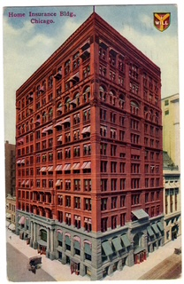

This third article in This Date in History examines and previews vital September dates in Chicagoland’s history. Mark the calendar with these dates in Chicago’s science and industry of physics, architecture and fiction.
Enrico Fermi, Physicist
Born on September 29, 1901 in Rome

Who is Enrico Fermi? In 1954, according to Chicago scholar June Skinner Sawyer, author of Chicago Portraits: Biographies of 250 Famous Chicagoans (Loyola University Press, 1991) Fermi was diagnosed with incurable stomach cancer. After exploratory surgery, Fermi spent his final days in Chicago visiting colleagues and family.
Physicist Fermi, a professor at the University of Chicago and 1938 Nobel Prize-winner, became known “for his leadership of the Manhattan Project team, which succeeded in obtaining the first controlled self-sustaining nuclear chain reaction.” The scientific experiment, conducted at the University of Chicago on December 2, 1942, fostered development of the atomic bomb. Fermi also developed the bomb in Los Alamos, New Mexico, perfecting the atom bomb for functional use and deployment.
After World War 2 ended when America declared victory upon Japan’s and Germany’s surrender, Fermi, by then already a Chicago physics professor, continued working as an adviser for the U.S. Atomic Energy Commission and the Office of Naval Research. Born in Rome, Italy, to a father who worked on the Italian railroad in an administrative role and a mother who had been a teacher prior to marriage, young Enrico took an interest in mathematics, which, under the guidance of Adolfo Amidei, an engineering colleague of his father’s, led to an interest in physics.
With close friend and future physicist Enrico Persico, Fermi expended effort designing and conducting scientific experiments, including a test to determine the precise density of Rome’s drinking water. As a theoretical physicist, Fermi’s kept an early research notebook, and, during the historic influenza outbreak of 1918, he studied in Pisa, Italy on scholarship, earning a degree magna cum laude in physics from the University of Pisa, where he experimented with X-rays.
Later, on a fellowship, Fermi worked with Nobel Prize-winning physics professor Max Born and studied with Werner Heisenberg, who would identify key principles in theoretical physics. Fermi later taught at the University of Rome and also studied in Holland and at the University of Florence, where he began work on statistics credited with deeper understanding of conduction of electricity in metals and development of a widely used statistical atom model.
Fermi was appointed physics professor at the University of Rome in 1926, where he lectured until 1938 and, until 1932, Fermi worked primarily on the theory of atomic structure. Working with other scientific scholars at the University of Rome, he studied the slowing down of the neutron, another recently discovered atomic particle, in hydrogenous materials. “By capturing the slow neutron in atomic nuclei,” Skinner writes, “he made a comprehensive study of a big class of artificially radioactive substances. His work on neutron physics was recognized in 1938 when he received the Nobel Prize for physics. The techniques and theories that he worked out during this period were also those that he later used in the ‘exponential pile’ experiments which led to the development of the first controlled uranium-graphite reactor.”
Meanwhile, Enrico Fermi, acquiring Fascist Party credentials required for scientific work, regarded Italy’s rising fascist state as stifling and, in 1938, having married Laura Capon, daughter of a Jewish family in Rome after Nazi-allied Italy enacted anti-Jewish racial laws, he escaped with his family—including his two children, Nella and Giulio, traveling to Stockholm, Sweden for the Nobel Prize awards ceremony. Fermi and his family escaped to America after the ceremony. He was eventually appointed as a physics professor at Columbia University.
By then, the U.S. government was seeking to develop atomic energy for military purposes. “Working with other physicists at the Metallurgical Laboratory in Chicago, which had been established for precisely this reason,” Skinner reports, Fermi “led a team to design and construct an exponential pile (sometimes referred to as Chicago Pile 1) in an empty room (formerly a squash court) under one of the [University of Chicago’s] athletics fields.” As Skinner puts it in Fermi’s biographical sketch: “The first-ever controlled self-sustaining nuclear chain reaction took place in that pile on December 2, 1942. During the subsequent two years, Fermi conducted various experiments using the reactor, as well as [assisting] in the development of a larger reactor at the nearby Argonne Laboratory. On July 11, 1944, Enrico and Laura Fermi were naturalized as citizens of the United States.”
Fermi later opted to work with the DuPont Company developing plutonium on an industrial scale, moving the Fermi family in August 1944 to Los Alamos, New Mexico, “where the War Department's top-secret Manhattan Project to develop the atomic bomb was already well underway.” There, he served as associate director of the Manhattan Project, leading all physics experiments in progress, conducting experiments on neutron cross-section measurements, and observing the first test of the bomb at Alamogordo, New Mexico. Fermi advised President Truman on a group of scientists recommending that the atomic bomb be used for military purposes and he was honored for his patriotism during the war, receiving the Congressional Medal for Merit in 1946.
Enrico Fermi returned to academic work at the University of Chicago as a physics professor, becoming “a member of the newly formed Institute for Nuclear Studies at the university,” later the Enrico Fermi Institute for Nuclear Studies. He also assisted in development of Chicago’s synchrocyclotron and of several electronic calculating machines, advised the Atomic Energy Commission, lectured, taught university courses, and published papers on various theoretical and experimental topics in physics, including his studies of neutron diffraction by crystals, of analogies between properties of neutrons and optical waves, the physics of mesons, the origin of cosmic rays, “and, in the last year of his life, of the polarization of proton beams on scattering.”
Days before Fermi’s November 29, 1954 death, the Atomic Energy Commission created an award for Fermi “in recognition of his distinguished service to the nation as a scientist.” Enrico Fermi died in his sleep at his Chicago home on November 29, 1954.
William Le Baron Jenney, Architect
Born: September 25, 1832

The “father of the skyscraper,” William Le Baron Jenney (1832–1907), was an American architect and civil engineer. “Working chiefly in Chicago after the Civil War,” Skinner writes in Chicago Portraits: Biographies of 250 Famous Chicagoans, Jenney pioneered use of an internal iron-and-steel structural frame—an innovation that made taller commercial buildings, which had until then consisted of masonry mostly contingent upon thick, load-bearing exterior walls, more feasible. Jenney’s architectural breakthrough changed design so that much of a tall building’s weight shifted to a metal structure of beams and columns, letting exterior masonry function like a non-load-bearing enclosure, rather than carrying the whole building.
Jenney’s best-known work is Chicago’s Home Insurance Building (demolished in 1931) designed in 1884 and 1885 and built ten stories high, making it the first tall building supported by an internal iron-and-steel frame and often referred to as the first skyscraper. The building was later enlarged. Jenney was born in Massachusetts, studying engineering in Paris, serving as a engineering officer for the Union during the Civil War and under both American military heroes Gen. Ulysses S. Grant and Gen. William T. Sherman, providing engineering leadership during the battle of Vicksburg.

Jenney founded a practice in Chicago after the Civil War, Skinner writes, working on urban and landscape planning, including aspects of Chicago’s park and boulevard systems and the suburb planned by landscape architects Frederick Law Olmstead and Calvert Vaux, Riverside, Illinois, where Jenney settled with his wife, Elizabeth Cobb. Jenney achieved enduring importance in technical and urban engineering and architecture, as against decorative styling, transforming the skyscraper from an idea into a tenable building and leading Chicago’s culture as a model for the modern American metropolis.
Richard Wright, Writer
Born: September 4, 1908 in Natchez, Mississippi

Richard Wright in Chicago defines his writing. Chicago provides both the conditions and intellectual framework through which he became a noted American writer. Wright, born near Natchez, Mississippi, on September 4, 1908, lived in Chicago from 1927 until his move to New York City in 1937. Wright’s father left the family when Wright was young and his mother’s sickness and paralysis further disrupted his childhood. He experienced violence during the Jim Crow era as well as deprivation.
Wright arrived in Chicago from the Deep South at the age of 19 in 1927 with the goal to become a writer. Chicago afforded the aspiring writer a system of libraries, newspapers written for and read by black audiences, paying labor for blacks and a black urban population. Wright’s early Chicago years were difficult as he worked in a string of low-paying jobs, including postal work, while reading and trying to write. These experiences gave Richard Wright knowledge of crowded housing, unstable work, racism, political discourse and exposure to an intellectual scene. Wright lived at several locations on Chicago’s South Side, finally residing at the La Veta apartment building at 3743 South Indiana Avenue in the Bronzeville/Douglas neighborhood, where a marker commemorates Wright.
With an eighth-grade formal education, Wright became self-taught through reading, journalism and discourse in writers’ circles. Hazel Rowley’s biography pegs Wright’s rise as a journey from Mississippi to Chicago’s South Side—then to international stature. His break came through a government program initiated by the Franklin Roosevelt administration—a New Deal Works Progress Administration program subsidizing writers—and Wright was hired on that condition in 1935. The state-sponsored program funded his expenditures, launching his career.

Wright had joined the Communist Party in 1932 and his collectivist philosophy informed his criticism and analysis, though Richard Wright left the Communist Party in 1944 over certain disagreements. Considered part of Chicago’s Black Renaissance within South Side literary circles of black writers, journalists, theatrical artists and radical activists, Wright depicted Chicago in his 1940 novel, Native Son, which was funded by a Guggenheim fellowship in 1938 and debuted after he had moved to New York City. Wright’s novel is set in Depression-era Chicago. The story follows Bigger Thomas, a 20 year-old poor black man on Chicago’s South Side. Bigger’s a victim of overcrowded housing, job scarcity, white power, fear and Chicago’s de facto neighborhood racial divisions. Native Son’s known for dramatizing Bigger’s employment in a white household as a path to privilege and racial hierarchy as Wright depicts Chicago’s press, police, courts and real estate as an indictment of Chicago shaping Bigger’s life of crime; Wright’s main character’s violent but Wright invites the reader to consider Bigger’s social conditions fueling his fear, humiliation, rage and choices. Wright’s argument shocked readers and made Native Son a bestseller and seminal work of 20th century American literature. Its Broadway adaptation, directed by Orson Welles, followed in 1941. Wright later lived in Paris, where he died in 1960.
Sources: Chicago Portraits: Biographies of 250 Famous Chicagoans (Loyola University Press 1991) by June Skinner Sawyer; foreword by Bill Kurtis.